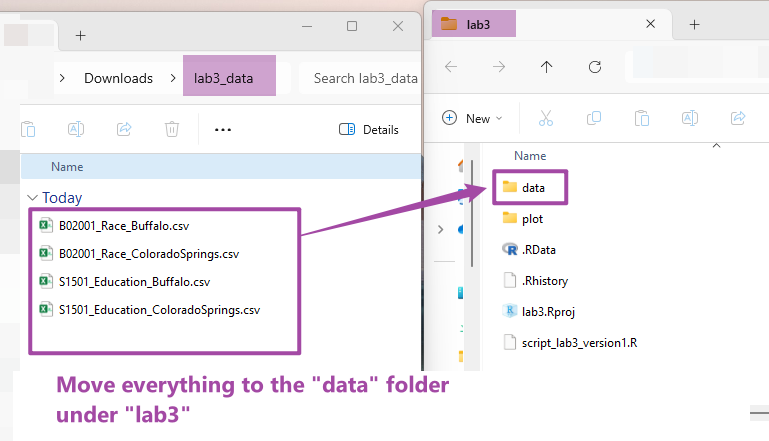

Chapter 3: The Data Analysis & Visualization Workflow
3.1 Lab Goals
This chapter aims to introduce the complete workflow of data analysis and visualization using R. After reading it, you should be able to:
- import data from local files
- clean and transforming data, such
as:
- extract data corpus
- join rows of different data frames into one
- understand sorting and ordering
- draw standard plots for exploratory and
visualization purpose by producing:
- histograms
- bar charts
- line plots
- waffle charts
- export plots as local files
3.2 Good Practice
Okay, I guess you already know what I am going to repeat. However, there are something new for this lab. I will try to be brief :)
3.2.1 Organizing Folders & Sub-folders
Similar to what we have done in previous labs, under the course folder, please create a folder called “lab 3”. Next, in the lab3 folder, please create two sub-folders that one is called “data” and another one is “plot”. We’ll use the “data” folder to store data collected from the internet. The “plot” will be used to export plots generated from R.
After created these folders, your folders should look similar to Figure 3.1.

3.2.2 Data
I have collected some tables for this lab. These tables tell use about population’s education attainment and racial diversity in two cities: Colorado Springs (CO) and Buffalo (NY). These data are collected from US Census Bureau using the American Community Survey’s 5-year estimates.
Please follow the steps below:
Go to https://github.com/fuzhen-yin/uccs_geoviz/blob/main/data/lab3_data.zip
Download the file “lab3_data.zip” (see Figure 3.2)
 Figure 3.2: Download “lab3_data.zip” .
Figure 3.2: Download “lab3_data.zip” .Unzip folder “lab3_data.zip” (see Figure 3.3)
 Figure 3.3: Extract files from “lab3_data.zip” .
Figure 3.3: Extract files from “lab3_data.zip” .Move all files to the “data” folder we just created in Step 3.2.1 (see Figure 3.4)
Figure 3.4: Move files to “data” folder under “lab3”.
3.2.3 Housekeeping & Launching RStudio
Again, we would like to start a new project from scratch with a clean R Script. Please do the following steps. If you have any questions about these steps, please refer to the previous chapters for help.
- Step 1: Make sure all existing R projects are properly
closed.
- If not, please close it by going to File –> Close Project –> Save changes (see Chapter 2.5).
- Step 2: Create a New Project using Existing Directory, navigate to lab3, click open, then Create Project. (see Chapter 1.3).
- Step 3: Create a New Script by go to File –> New File –> R Script. Save the script by giving it a proper name.
3.2.4 Before You Start
Heads-Up!
This is a pretty long tutorial but it will guide you through a complete workflow of data analysis and visualization. As you can imagine, this will be a steep learning curve. Please take regular breaks (see instructions below).
This tutorial covers most of the techniques for Assignment 2. Please try to:
- Re-write the script by yourself.
- Read through the text carefully and try to understand what bits of code are doing as you go.
- It’s okay that you don’t fully understand some codes. Don’t worry as the key is to revisit later and try to work out what is going on. Learning is a iterative process.
- Start to think about how you can adapt a particular line of code or functions to your own project.
- Be CURIOUS!! Ask QUESTIONS!!
Only Read This If You Plan to Take Breaks!
If you plan to work on this lab later, please remember to save your script, and properly close the project and RStudio. To reopen your project, please:
- Step 1: launch RStudio.
- Step 2: open project by going to “File” –> “Open Project” –> Navigate to your “lab3” folder, click to open lab3.Rproj.
- Step 3: You should be able to see your script for lab3.
- If not, go to “File” –> “Open File” –> Navigate to your “lab3” folder, and open the script with the suffix .R.
- Step 4: Before writing new lines, please run the existing script from top to bottom.
3.3 Viz: Population Growth
Finally, we’ll start coding! From now, each section is an independent project that each produces one or more graphics for different purposes. Each project will expose you to a complete data analysis and visualization workflow.
We will use two cities Colorado Springs (CO) (a growing city) and Buffalo (NY) (a declining city) for case studies. The purpose of these graphics is to understand their different socio-demographic characteristics.
Let’s install & call some
libraries first. Last time, we have used ggplot2. This
time, we will learn another library dplyr and
waffle.
dplyris a very commonly used package for data frame manipulation .waffleis a package to produce waffle chart.
# ## Install libraries
# install.packages("dplyr")
# install.packages("waffle")
# # If you don't have the package "ggplot2", please un-comment the code below (delete the hash tags) and run it
# # install.packages("ggplot2")This section is to compare the population growth between two cities